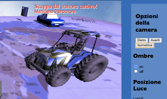
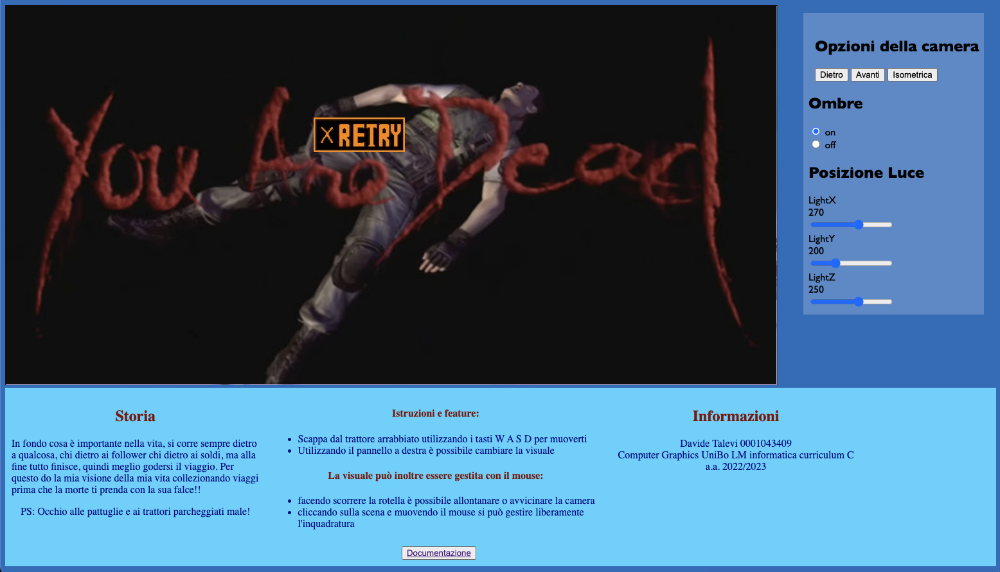
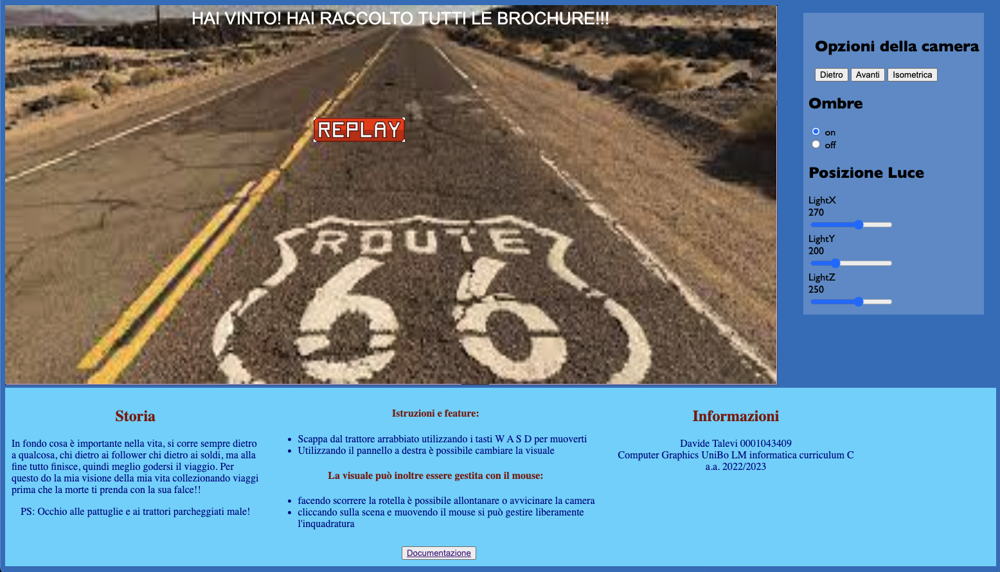

In fondo cosa è importante nella vita, si corre sempre dietro a qualcosa, chi dietro ai follower chi dietro ai soldi,
ma alla fine tutto finisce, quindi meglio godersi il viaggio.
Ho subito un grave incidente stradale, io in sella alla mia bellissima Ducati e un trattore delle camapane, che mi ha costato parecchio tempo in ospedale.
Ero caduto in depressione, ma con la determinazione di riprendere in mano la mia vita ho deciso nonostante i problemi di creare questo gioco dove
ricreando un'ambientazione simile all'accaduto ho voluto promuovere promuovere la corsa alla vita,
continuare nonostante tutto ad inseguire i propri sogni, e di miei sono i viaggi
Aiuta il centauro a collezzionare le sue tappe raccogliendo le brouchure dei paesi da visitare prima che il trattore lo prenda!
PS: occhio alla polizia e ai trattori parcheggiati male, mi raccomando!!
Per la realizzazione della scena, sono state utilizzate diverse tecniche.
È stata creata una rappresentazione del mondo infinito all'interno di una skybox, utilizzando un cubo al quale sono state applicate texture e una prospettiva realistica. L'ambiente è stato reso vivido attraverso l'inserimento di un piano che rappresenta il mondo. Il piano e la mappa hanno le stesse dimensioni, infatti, quando si esce dal piano, compare la schermata di "game over" che consente al giocatore di riprovare premendo il pulsante "retry". La scena è costituita da diverse Mesh, importate da file separati nel formato Wavefront OBJ. La Mesh della moto(Ducati Panigale V4s), ottenuta da free3d.com, era molto complessa, quindi è stata ridotta in termini di poligoni utilizzando il software Blender, per renderla adatta all'applicazione. Il secondo oggetto è un cartello, creato con Blender, al quale è stata applicata una texture(la mia foto) per renderlo visibile e distinguibile dal resto della scena, e identifica il luogo del creatore. Successivamente abbiamo due oggetti ripetuti, il trattore e l'auto della polizia, che sono i nemici del gioco. Sono stati scaricati da turbosquid.com e poi modificati su Blender in quanto erano composti da parecchi elementi e per alleggerire le texture sono stati uniti i diversi elementi che li componevano.
Per importare le mesh nella scena viene utilizzata la funzione loadObj presente nel file utils.
Come texture per il trattore ho inserito dei cipressi, gli stessi che hanno impedito al trattore di vedere il mio arrivo.
Ho cercato di riprodurre una luce il più simile possibile a quella naturale posizionando una sorgente luminosa sopra la scena. Questa luce ha una direzione specifica e fa uso di una texture di profondità, sfruttando le coordinate di profondità per determinare gli oggetti che si trovano in ombra e da quale lato. L'utente ha la possibilità di regolare la posizione della sorgente luminosa lungo i suoi assi. Ho introdotto un parametro di correzione, chiamato "shadow acne", per limitare l'effetto di pixelizzazione delle ombre. Inoltre, l'utente ha la possibilità di scegliere di non renderizzare le ombre, in modo da ridurre il carico di lavoro del sistema nel caso in cui si desideri eseguire il gioco su computer meno potenti. Un problema associato alla scelta di illuminare la scena attraverso questa tecnica risiede nella leggera pixelizzazione delle ombre, nonostante l'utilizzo di un parametro di correzione molto basso. Ciò è dovuto al ridotto numero di poligoni degli oggetti, che risultano meno levigati quando le ombre sono attive. Per migliorare l'aspetto visivo, si potrebbe aumentare il numero di poligoni degli oggetti o, come alternativa, implementare un algoritmo di shading efficiente in grado di affinare la forma delle ombre.
Il movimento della moto all’interno della scena è stato gestito partendo dal file cg-car2.js visto durante il corso.
La fisica utilizzata per il movimento è una versione semplificata della funzione di animazione della macchina, senza dover però gestire le ruote.
Il movimento all’interno della mappa è caratterizzato da alcune collisioni.
Utilizzando la posizione del personaggio che si sta controllando si può determinare se si è entrati in collisione con il nemico che ci insegue o meno o con gli ostacoli che si possono incontrare.
La posizione del personaggio giocabile è stata inoltre sfruttata per creare l’algoritmo di inseguimento usato dal nemico, che controllando la posizione della moto sugli assi x e z, aggiorna la sua direzione sugli assi, andando a modificare la posizione del nemico ad ogni frame.
Sono state implementi due tipi collissioni:
Quando il trattore ti prende o collidi con un ostacolo, il gioco va in uno stato di game over, e tramite lo spawn dell’apposita schermata è possibile riniziare la partita.
La collisione con le brouchure invece, porta allo scomparire di questi ultimi. Una volta raccolti tutti, tramite degli appositi controlli, si determina la vittoria del giocatore. Anche in questo caso viene mostrata a schermo una vista che comunica al giocatore il suo successo e viene data la possibilità a questo di ricominciare.
Le brouchure nella scena ruotano attorno all’asse y e all’asse x con una funzione fornita dalla libreria “m4.js”:
“m4.yRotate(m, angleInRadians, dst)”
“m4.xRotate(m, angleInRadians, dst)”
Si distinguono due tipi di interazioni:
Le interazioni di gioco sono possibili
Eseguendo il programma su computer, per muovere la moto è necessario utilizzare i tasti W,A,S,D (convenzione generale utilizzata nei giochi che sfruttano mouse e tastiera come fonte di input)
La camera può essere gestita tramite frecce direzionali e tramite il mouse. Usando inoltre la rotella del mouse si può allontanare o avvicinare la camera al personaggio.
L’interfaccia presenta un pannello sulla destra con vari bottoni e sliders. Questi permettono di posizionare la camera in tre modalità distinte:
- Posteriore
- Frontale
- Isometrica
Gli slider forniscono la possibilità (come già detto in precedenza) di spostare la sorgente della luce sugli assi x, z e y.
Ovviamente, l’uso di questa funzione risulta più di impatto con le ombre abilitate. È infatti possibile selezionare se visualizzare o meno.
Per permettere all’utente di usare l’applicazione anche da smartphone, sono stati inseriti sulla scena delle immagini (prese da google immagini) rappresentanti il layout dei tasti “WASD” e “arrowUp, arrowLeft, arrowDown, arrowRight” sulla tastiera.
Sono stati poi posizionati sul canvas rispettivamente sulla sinistra e sulla destra, pensando a simulare un controller, dove con il pollice destro muoviamo il personaggio e con il sinistro gestiamo la camera.
La particolarità del software risiede nella meccanica di inseguimento proposta. Infatti il gioco risulta ben bilanciato con la velocità del nemico rispetto alla propria, ritrovandosi in più occasioni a ritrovarsi con la strada tagliata dal nemico, risultando in un game over. Inoltre le pattuglie e i trattori parcheggiati confondono il giocatore e allo stesso tempo lo mettono in difficolta nello schivarli.
La posizione delle pattuglie, trattori e brouchure, così come lo spawn del nemico vengono generati casualmente ad ogni inizio della partita.
Per migliorare il software in futuro si potrebbero implementare le seguenti feature: